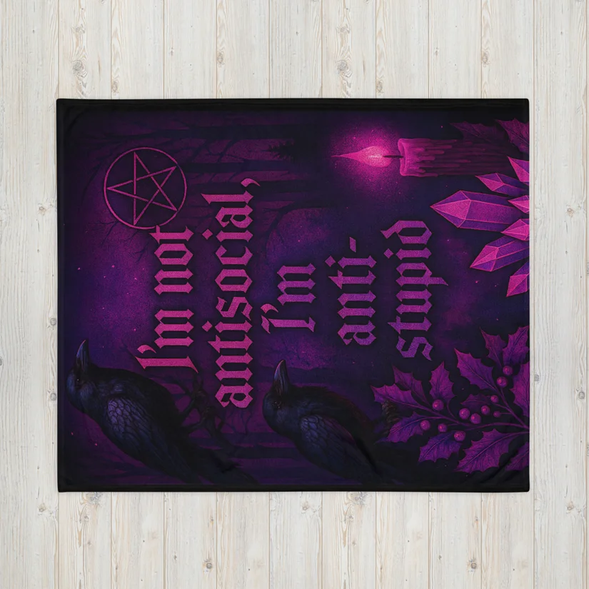

Blanket
✶

“I’m Not Antisocial, I’m Anti-Stupid” Gothic Blanket
Curl up under something that matches your soul: cozy, dark, and done with everyone’s nonsense.
Wrap in chaos
Witchy, goth, slightly unhinged tools to make your life feel a little more organized, even when everything is on fire.
All items below are fulfilled through Printful — you click, they print, and your chaos gets some stylish backup.
Curl up under something that matches your soul: cozy, dark, and done with everyone’s nonsense.
For errands, appointments, and school runs where you’re over-stimulated by people and underwhelmed by their intelligence. Cute goth, brutally honest.
For the days when small talk feels like a personal attack. Let your shirt say what your face already is.
Diapers, snacks, crystals, receipts, and emergency caffeine cash — all in one very witchy, very honest mom bag.
For mornings when your nervous system is tired, your kids are loud, and coffee is the only thing keeping you in this dimension.
Want to see everything in one place?